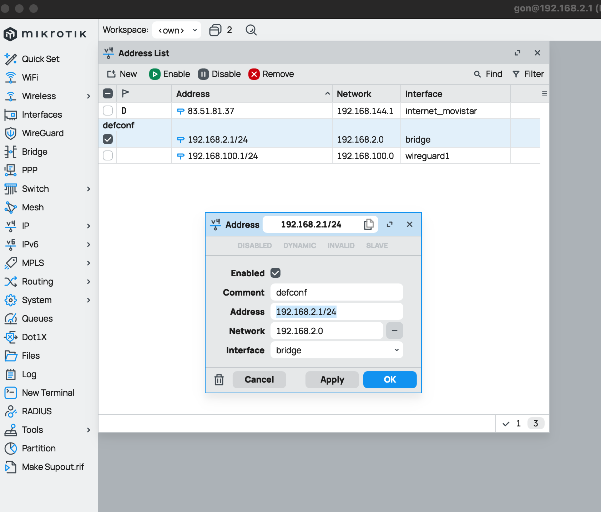

Networking
Tutorials and Guides
Configure Router Mikrotik Replacing Router HGU Movistar/O2
This guide explains different steps for configure my router Miktrotik hEX S replacing Movistar/O2 router HGU. this one will be used as ONT only.
Home Network Map
 This is the network map which I configured following this guide.
This is the network map which I configured following this guide.
Hard Reset
This is optional. I did it because I configured this router years ago and I didn't remember which CIDR I've configured and credentials for login on it:
1. With unplugged router, press "Reset" button and plug it again.
2. Release the button when green SFP LED starts flashing to reset RouterOS configuration to defaults. More info
3. After router reboots, I can access to router config with IP 192.168.88.1 and credentials username: admin and no password. We need to modify our IP and set another inside CIDR 192.168.88.0/24
Change default IP address
Before start to configure anything, ust to reminder that we can manage a mikrotik router with a GUI like WinBox o WebFig, or using a command line terminal. I recommend to use WinBox but I added CLI commands for apply same config just doing copy-paste.
WinBox
- Go to
IP>Addresses - Select interface with name
bridge - Modify
AddressandNetwork. In this case:Address: 192.168.2.1/24Network: 192.168.2.0
- Click on
ApplyandOK - Go to
System>Reboot
CLI
Setting up a new Default IP for router on bridge interface using its id which is 0
ip/address/print where interface=bridge
Columns: ADDRESS, NETWORK, INTERFACE
# ADDRESS NETWORK INTERFACE
;;; defconf
0 192.168.88.1/24 192.168.88.0 bridge
ip/address/set numbers=0 address=192.168.2.1/24
ip/address/print where interface=bridge
Columns: ADDRESS, NETWORK, INTERFACE
# ADDRESS NETWORK INTERFACE
;;; defconf
0 192.168.2.1/24 192.168.2.0 bridge
Change HGU mode to bridge
We need to change how our Movistar/O2 HGU router is working. At the moment is working as ONT + Router. We want to change it its mode to just working as ONT.
* Connect to HGU web panel http://192.168.1.1/
* Disable DHCP service and Wi-Fi
* Change mode form "Multipuesto" to "Monopuesto"
* Connect cable from eth1port of this router to eth1port of Mikrotik router
Configure VLAN
Movistar/O2 uses VLANs for offer data traffic, VoIP and TV services. We just need data traffic which its VLAN ID is 6
WinBox
- Go to
Interfaces> Select tabVLAN - Click on
New - Set next parameters/config:
- Name:
vlan_internet_movistar - MTU:
1492 - VLAN ID:
6 - Interface:
ether1
- Name:
- Click on
ApplyandOK
CLI
interface/vlan/add name=vlan_internet_movistar mtu=1492 vlan-id=6 interface=ether1
interface/vlan/print
Flags: R - RUNNING
Columns: NAME, MTU, ARP, VLAN-ID, INTERFACE
# NAME MTU ARP VLAN-ID INTERFACE
0 R vlan_internet_movistar 1492 enabled 6 ether1
Configure PPPoE Client (WAN)
PPPoE (Point-to-Point Protocol over Ethernet) is used by many ISP, Movistar/O2 too. Configuring our Mikrotik with PPPoE we're establishing an individual and authenticed session with Movistar, which will provide me a publick IP address.
WinBox
- Go to
PPP - Click on
New>PPPoE Client - On tab/section
General:- Name:
internet_movistar - Interface:
ether1
- Name:
- On tab/section
Dial Out:- User:
adslppp@telefonicanetpa - Password:
adslppp - Enable option
Add Default Route
- User:
- Click on
ApplyandOK
CLI
interface/pppoe-client/add name=internet_movistar interface=ether1 user=adslppp@telefonicanetpa password=adslppp add-default-route=yes disabled=no
interface/pppoe-client/print
Flags: X - disabled, I - invalid; R - running
0 R name="internet_movistar" max-mtu=auto max-mru=auto mrru=disabled interface=ether1 user="adslppp@telefonicanetpa>
password="adslppp" profile=default keepalive-timeout=10 service-name="" ac-name="" add-default-route=yes
default-route-distance=1 dial-on-demand=no use-peer-dns=no allow=pap,chap,mschap1,mschap2
Configure DHCP Server on LAN
Configure DHCP range IP which router Mikrotik will lease to different hosts. Mikrotik offer a DHCP Server configured on virtual interface bridge.
I just want to set range IP.
WinBox
- Go to
IP>DHCP Server - Select tab
Networksand select network with namedefconf:- Address:
192.168.2.0/24 - Gateway:
192.168.2.1 - DNS servers:
192.168.2.1
- Address:
- Click on
ApplyandOK

- Go to
IP>Pool - Select IP pool named
dhcp-default:- Address:
192.168.2.10-192.168.2.254
- Address:
- Click on
ApplyandOK

CLI
ip/dhcp-server/network/set numbers=0 address=192.168.2.0/24 gateway=192.168.2.1 dns-server=192.168.2.1
ip/dhcp-server/network/print
Columns: ADDRESS, GATEWAY, DNS-SERVER
# ADDRESS GATEWAY DNS-SERVER
;;; defconf
0 192.168.2.0/24 192.168.2.1 192.168.2.1
ip/pool/set numbers=0 ranges=192.168.2.10-192.168.2.254
ip/pool/print
Columns: NAME, RANGES, TOTAL, USED, AVAILABLE
# NAME RANGES TOTAL USED AVAILABLE
0 default-dhcp 192.168.2.10-192.168.2.254 245 8 237
Configure NAT on Firewall
Just check if a NAT rule for Masquerade is configured
WinBox
- Go to
IP>Firewall - Select tab
NAT - Check if a rule exists with next config:
- On
General- Chain:
srcnat - Out. Interface List:
WAN
- Chain:
- On
Action- Action:
masquerade
- Action:
- Checkbox
Enabledmarked
- On
If not exists, creates a new one with this config.